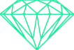

About
Undergraduate in Computer and Communication Engineering at MIT Manipal. I enjoy low-level coding and understanding how systems work at their core. My work lies at the intersection of AI and cybersecurity.
I used to play CTFs for Cryptonite 
Experience
- Worked as a Data Infrastructure Engineer within Corporate Technology (Firmwide Planning & Analysis).
- Engineered distributed data pipelines and analytics systems utilizing Apache Spark and AWS.
- Automated cloud infrastructure provisioning and CI/CD pipelines with Terraform, Jenkins, Spinnaker, and ADK.
- Working in Embodied AI under Dr. Xiaolong Wang at Xu Lab.
- Leading R&D initiatives for one of the best academic CTF teams in Asia
- Specialize in Digital Forensics, Incident Response (DFIR), and AI Security challenges
- Developed and deployed challenges for niteCTF 2024 and 2025 — 3rd highest rated Indian CTF globally
- Mentoring junior members in forensics, research, ML/DL, and malware analysis
- Part of core research team exploring intersection of AI and cybersecurity
- Worked under Dr Umapada Pal with collaboration from University of Salford and Chinese Institute of Information Science
- Implemented novel Deepfake Detection algorithm that outperformed SOTA methods
- Paper accepted at ACPR-2025 (Asian Conference on Pattern Recognition)
Publications
Education
- CGPA: 9.3
- Top 0.01 percentile in the ICT Department
- 95.2% CBSE · House Prefect · Tech Club Core
Skills
languages
- AssemblyScript
- C
- C++
- C#
- Embedded C
- Python
- JavaScript
- Java
- Rust
- Go
web & frontend
- HTML5
- CSS3
- SASS
- React
- NodeJS
- Vite
ai/ml & cv
- PyTorch
- TensorFlow
- OpenCV
- CUDA
- scikit-learn
- XGBoost
- GANs
- CNNs
- Transformers
- YOLO
dfir & security
- IDA Pro
- Ghidra
- Volatility
- Wireshark
- Autopsy
- FTK Imager
- Sleuth Kit
- Binary Ninja
databases & big data
- Apache Spark
- MySQL
- MongoDB
- Elasticsearch
- Redis
devops & sre
- AWS
- Docker
- Kubernetes
- Terraform
- Jenkins
- Spinnaker
- ADK
- Cloud Foundry
- Ansible
- Puppet
observability
- Prometheus
- Grafana
- Splunk
- Jaeger
- ELK Stack
tools & testing
- Git
- GitHub
- Kafka
- Selenium
- pytest
Achievements
- EnigmaXplore 2024 — IIIT Naya Raipur
- BITSCTF 2024 — BITS Goa
- CruXipher 2024 — BITS Hyderabad
- KashiCTF 2025 — IIT BHU Varanasi
- TexSAW CTF 2025 — UT Dallas
- BITSCTF 2025 — BITS Goa
- CapturePoint CTF 2025 — IIIT Vadodara
- ExploitX CTF 2025 — Top Individual
- Codefest CTF 2025 — IIT BHU
- eHax CTF 2025 — DTU Delhi
- FooBar CTF 2025 — NIT Durgapur
- Achiever's Scholarship — MIT Manipal
- Finalist — JPMorgan Code for Good
- Paper accepted — ACPR 2025
Volunteering
Projects
Standalone Rust-native post-training quantizer & inference engine for LLMs. Converts SafeTensors/GGUF to zero-copy memory-mapped .pox format with Metal compute shaders, AWQ/GPTQ, INT4/INT8, and Ed25519 cryptographic signatures.
High-performance asynchronous BitTorrent engine in Rust with a distributed stack: headless daemon, REST/WebSocket API layer, and CLI/Web dashboard controllers.
Fast Rust TUI system monitor for macOS & Linux with live process insights, tree navigation, lock selection tracking, watchlists, signal dispatch, and configurable alerts.
Native macOS dual-pane SSH and remote file manager built in Swift and SwiftUI with differential delta transfers (rsync), keychain credential store, and multi-hop bastion jump host support.
High-throughput URL shortening service with distributed caching, QR code generator, real-time geolocated click analytics, and custom alias routing.
AI-powered memory forensics platform integrating Volatility 3 with local LLMs (Ollama) for automated triage, anomaly detection, and interactive dump analysis.
Real-time local network file sharing service with zero-configuration peer discovery, streaming transfers, and QR connectivity.
Real-time orbital collision risk prediction with interactive 3D WebGL visualization and machine learning ensemble classifier (94.2% accuracy).
Hybrid malware detection framework — Portable Executable (PE) static analysis combined with gradient boosting ML (98.89% accuracy).
Real-time stock trading simulator and portfolio tracker with Prophet time-series price forecasting and technical charts.
Cycle-accurate Nintendo Entertainment System (NES) emulator in Rust with 6502 CPU emulation, PPU rendering, and SDL2 audiovisual output.
Android password manager in Java with encrypted local storage, optional Firebase sync, Autofill integration, and password entropy analysis using rule-based + ML scoring with HIBP k-anonymity checks.
Deep convolutional generative adversarial network with U-Net architecture for reconstructing severely corrupted dashcam images.
Open Source Contributions
Major contributor to Cryptonite's comprehensive forensics training repository covering steganography, network analysis, and digital forensics.
Implemented a comprehensive localStorage favorites/bookmarking system for saving content across the Campus Directory.
Fixed out-of-bounds array access vulnerability in message.rs. Added proper bounds checking for unknown_uuid_index, preventing crash risk on corrupted DSC files.
Built a Python library for IMO Bench providing a clean API with type-safe dataclasses, filtering, and 35 passing tests.
Contributed core Clang AST processing improvements, unified symbol resolution, and macOS test invocation fixes to the C++ interoperability engine used at CERN:
Blogs
My collection of blogs covering digital forensics, deep learning, and systems programming.
Resume
Hobbies
Contact
Open to research opportunities and internships.
mail to das[dot]adriteyo[at]gmail[dot]com You may also use my PGP key